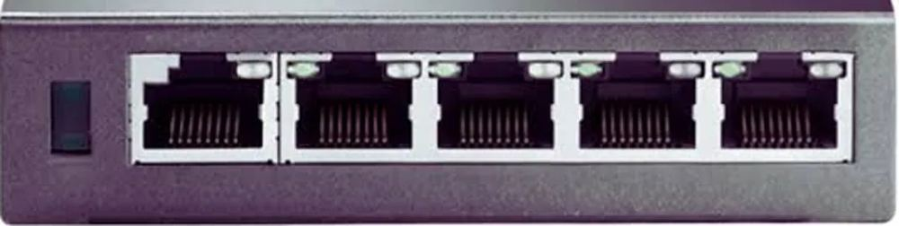

Home / Technology
Infrastructure built for precision execution
From raw market data to a trade on your MT5 chart in milliseconds, on hardware we own and operate.
From raw data to automated decisions
The SPARKS server continuously processes institutional market feeds in real time, combining order flow and CBOE options dynamics into execution signals for CX1.
Tick-level tracking
Live futures volume and aggressor trades, tick by tick.
Expand
The server tracks institutional futures volume and aggressor trades at the tick level, bypassing the data limits of a standard MT5 feed.
Noise and spoof filtering
Manipulative or thin moves are removed before they become a signal.
Expand
High-speed algorithms evaluate delta pressure and filter out spoofing and low-liquidity noise before any execution parameters are produced.
Dynamic liquidity mapping
Resting orders and order book shifts mapped as price moves.
Expand
Key liquidity pools, large resting limit orders and immediate order book changes are mapped dynamically as trading unfolds.
Options positioning
The server watches CBOE options activity in real time to read institutional positioning and sentiment.
Smart money flow
Options volume, unusual sweeps, block trades and open interest changes.
Structural gamma mapping
Gamma exposure (GEX), zero-gamma flips and heavy call and put strike walls.
Dynamic hedging zones
Where market makers are forced to hedge: support, resistance and volatility triggers.
Institutional edge
An overlay that shows commitment before price moves.
Data dispatch and risk
Processed levels and flow bias are fed to CX1 for execution on MT5, with risk worked out per trade.
Data dispatch to CX1
Processed GEX levels and option flow bias go straight to the EA.
Real-time risk calculation
Risk per trade from account equity, live volatility and structural invalidation levels.
Adaptive sizing
Position size follows ATR and liquidity depth in real time.
Capital preservation
Daily loss stops and maximum drawdown limits are enforced; trailing stops and partial profits adjust as price moves.

Bare-metal, not cloud
SPARKS runs on custom micro-servers assembled and maintained in-house. Without a virtualised cloud layer, all of the processing power goes to market data.
- Dedicated CPU power: no hypervisor, no throttling
- Isolated hardware threads: data and execution pipelines run on separate physical cores
- Direct network routing: low-overhead sockets to broker endpoints
- Full ownership: hardware, operating systems and security layers are ours
Reliability and security
Power and network redundancy
Local UPS battery units, failover connections and dual ISP paths for continuous uptime.
Continuous monitoring
Health checks watch feed integrity, socket latency, packet loss and endpoint connectivity around the clock.
Instant alerts
Server telemetry and diagnostic alerts are sent to monitoring dashboards and notifications.
Encrypted and backed up
Strategy logs, parameters and local feeds are protected by encrypted connections and automatic backups.
Modular by design: the framework can expand across futures, options and several MT5 broker endpoints without a rebuild.